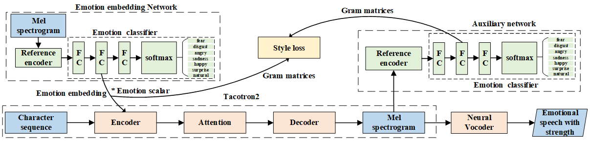

Adversarial Robustness of Mel based speaker recognition systems
Abstract:
Convolutional neural networks (CNN) applied to Mel spec-trograms began to dominate the landscape of speaker recogni-tion systems. Correspondingly, it is also important to evaluatetheir robustness to adversarial attacks that remains unexploredfor end-to-end trained CNNs for speaker recognition. Ourwork addresses this gap and investigates variations of the iter-ative Fast Gradient Sign Method (FGSM) to generate adver-sarial attacks. We observe that a vanilla iterative FGSM canflip the identity of each speaker sample to every other speakerin the LibriSpeech dataset. Surprisingly, the effort requiredto flip the identity is uncorrelated with the distance betweenthe original and target speaker embeddings. Furthermore, wepropose adversarial attacks specific to Mel spectrogram fea-tures by (a) limiting the number of pixels attacked, (b) restrict-ing changes to specific frequency bands, and (c) restrictingchanges to particular time duration. Using thorough qualita-tive and quantitative results, we demonstrate the fragility andnon-intuitive nature of the current CNN-based speaker recog-nition systems, where the predicted speaker identities can beflipped without any perceptible changes in the audio.
1. The architecture of the proposed model:

2. Demo of style transfer for emotional TTS :
To facilitate fair comparison, we use the same text to synthesize speech in six emotions. This may let the listeners more focused on the emotion delivered in the acoustic aspects. The text is (in Chinese): 让那些小主顾们等一等到吧。
emotion
Reference audio
Prosody Tacotron
+ Lcls_src
+ Lcls_tgt
+ Lcls_src + Lcls_tgt
Ltotal
surprise
happy
sad
angry
disgust
fear
3. Demo of emotion strength control in emotional TTS :
To facilitate fair comparison, we use the same text to synthesize speech in six emotions and three strengths. This may let the listeners more focused on the emotion delivered in the acoustic aspects. The text is (in Chinese): 让那些小主顾们等一等到吧。
emotion
RA-Tacotron (Low)
proposed (Low)
RA-Tacotron (Medium)
proposed (Medium)
RA-Tacotron (Strong)
proposed (Strong)
surprise
happy
sad
angry
disgust
fear
4. Demo of continuous emotion strength control :
A synthetic story using the proposed emotion strength control. The proposed approach can make audiobooks more expressive. Each sentence is assoiciated with an emotion type and strength (larger is stronger).